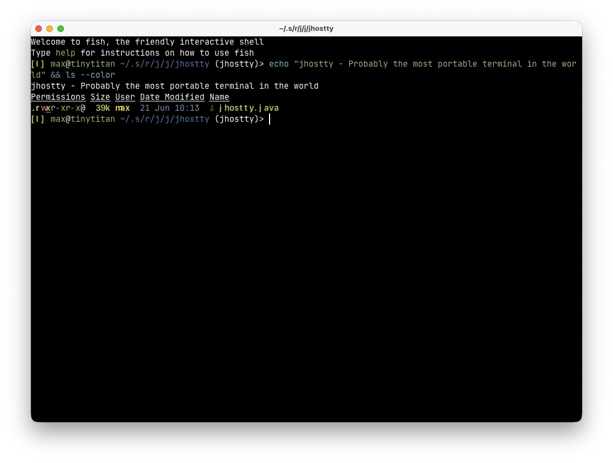
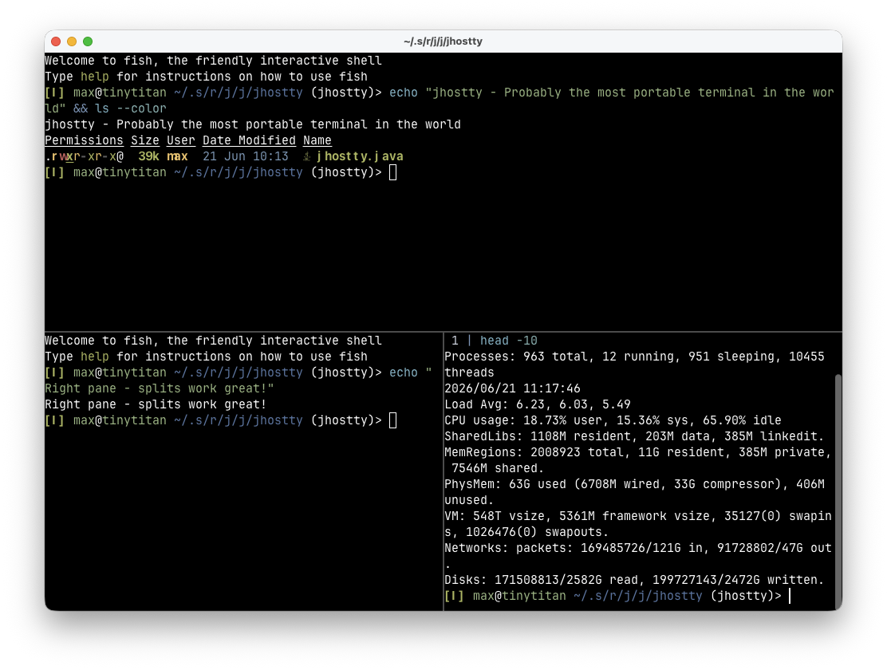
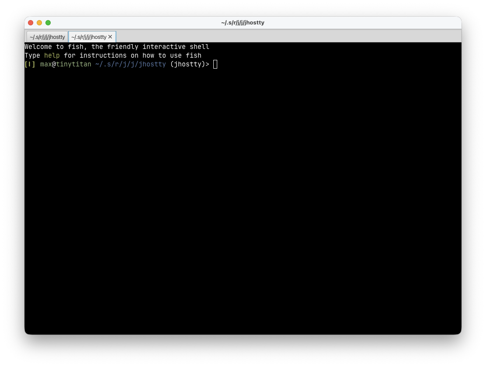
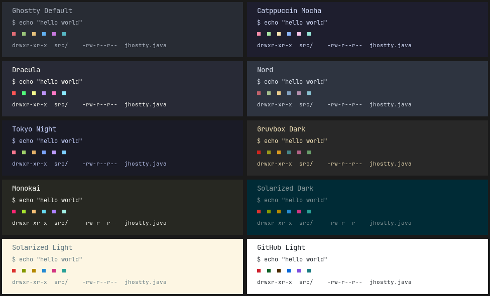
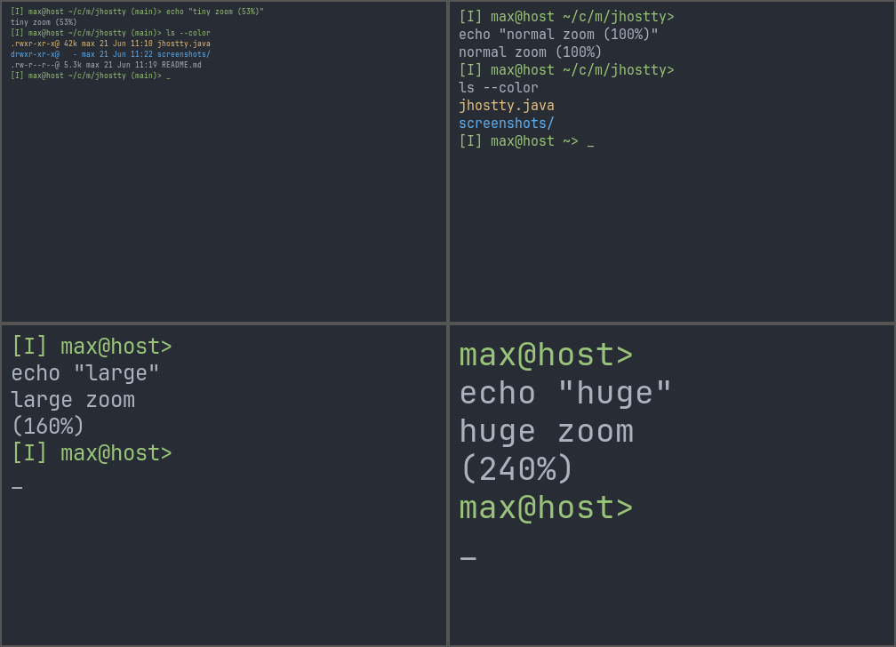

Probably the most portable terminal in the world
A full-featured terminal emulator in a single Java file, powered by GhosttyFX — Ghostty's terminal engine exposed as a JavaFX control. No build system, no IDE, no project setup — just JBang and one file.
jbang jhostty@maxandersen
JBang downloads Java 25 automatically if needed.
jbang app install jhostty@maxandersen
jhostty
git clone https://github.com/maxandersen/jhostty.git
cd jhostty && jbang jhostty.java

Everything you'd expect from a real terminal — in one file.
Open multiple windows, tabs, and split panes. Horizontal and vertical splits nest freely.
Switch themes on the fly — the entire UI adapts, including context menus and split dividers.
Each split pane has independent zoom. Use keyboard shortcuts, scroll wheel, or trackpad pinch.
Every font on your system is available. Popular terminal fonts are listed first for quick access.
Drop files, text, or URLs onto any terminal pane. They're pasted as paths or content.
Clickable URLs in terminal output. Hover to see the hand cursor, click to open.
macOS system menu bar, cross-platform shortcuts (⌘/Ctrl), styled right-click context menus.
Search (⌘F/Ctrl+F) and prompt navigation via Ghostty's shell integration.
See it in action.

Horizontal and vertical splits, nested freely.

Tab bar appears with multiple tabs, hides when back to one.

10 built-in themes, switchable from the View menu.

Independent zoom per pane. Title bar shows zoom percentage.
jhostty remembers your preferences automatically.
Your settings (theme, font, zoom, window position) are auto-saved to:
~/.config/jhostty/jhostty-state.propertiesTo customize settings permanently, create an override file:
~/.config/jhostty/jhostty.propertiesUser config takes priority. Omit a key to auto-detect.
| Key | Description | Default |
|---|---|---|
theme |
Theme name (e.g. Dracula, Nord) |
Ghostty Default |
font |
Font family | Auto-detected |
font-size |
Base font size — what "Reset Zoom" returns to | 15.0 |
zoom |
Current zoom level — remembered across restarts | Same as font-size |
shell |
Shell command | Auto-detected |
window-x |
Window X position (pixels) | OS default |
window-y |
Window Y position (pixels) | OS default |
# ~/.config/jhostty/jhostty.properties
theme=Dracula
font=JetBrains Mono
font-size=16.0Use View → Reload Config to apply changes without restarting.
Minimal dependencies, maximum capability.
| Dependency | Version | Purpose |
|---|---|---|
ghosttyfx |
0.1.169 | Terminal control — pulls in JavaFX transitively |
pty4j |
0.13.12 | PTY backend for shell interaction |
slf4j-nop |
2.0.13 | Silence SLF4J warnings |
Built with JBang — no Maven, no Gradle, no build system.
Just jbang jhostty.java and you're running.